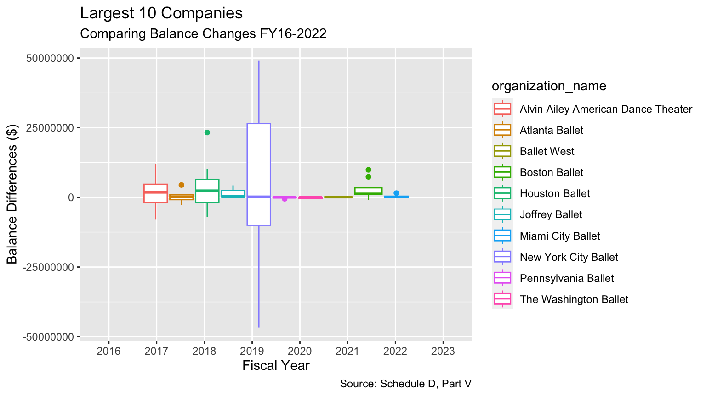

This section will demonstrate calculations and exploratory data visualizations on the endowment management and governance using Form 990, Section D, Part V.
By investigating variables 1a-g we can learn about the financial health and performance of the endowment fund including some of its sources of revenue, expense and impacts of the investment activities. This will also produce insights on the endowment fund’s long-term sustainability and perpetuity which is especially meaningful for smaller endowment’s because they can learn from the successes of a larger endowment. It may also help them reevaluate their endowment management and how governance alters in the face economic downturns and market volatility.
For this exploratory analysis I have used the top5 largest and bottom5 smallest endowments from 2022 to produce visualizations, and snippets of the calculations of one of the smallest and largest endowments.
Metrics:
Change over fiscal year
Expense ratio
Multiple regression - adjusted R^2
Net contributions
1 Change Over Fiscal Year
1.0.1Calculations
How does it evaluate the fund’s financial health: a healthy endowment may have consecutive positive changes in beginning of year balances from end of year balances; indicating a stronger endowment value attributed to larger contributions or investment earnings
How does it evaluate the fund’s sustainability : trends of these endowment balances and their differences over multiple fiscal years can inform long-term planning and decision-making; perhaps making adjustments to total expenses or strategizing to increase investment earnings or contributions for the endowment’s continued growth and perpetuity.
difference = (eoy_balance - boy_balance)
## print the first few rows of New York City Balletprint(head(diff_nyc))
organization_name fiscal_year boy_balance eoy_balance difference
1 New York City Ballet 2016 181363160 167823667 -13539493
2 New York City Ballet 2017 167823667 189723371 21899704
3 New York City Ballet 2018 189723371 220770500 31047129
4 New York City Ballet 2019 220770500 220949309 178809
5 New York City Ballet 2020 220949309 214442196 -6507113
6 New York City Ballet 2021 214442196 263434555 48992359
## print the first few rows of San Francisco Balletprint(head(diff_sf))
organization_name fiscal_year boy_balance eoy_balance difference
1 San Francisco Ballet 2016 174 174 0
2 San Francisco Ballet 2017 100219009 119047942 18828933
3 San Francisco Ballet 2018 119047942 125015507 5967565
4 San Francisco Ballet 2019 125015507 124452193 -563314
5 San Francisco Ballet 2020 124452193 113923812 -10528381
6 San Francisco Ballet 2021 113923812 137456934 23533122
1.0.2Visualization
viz_top5_change
viz_top5_spread
viz_bottom5_change
viz_bottom5_spread

2 Expense Ratio
2.0.1Calculations
How does it evaluate the fund’s financial health: a healthy endowment may have a decreasing expense ratio because the firm may become more efficient at allocating expenses while an increase may indicate a financial strain or higher expenses on the firm.
How does it evaluate the fund’s sustainability: a consistent expense ratio may reveal a pattern into the endowment’s operations and spending habits; maintaining a ‘sustainable’ ratio is crucial to maintaining the endowment’s perpetuity and preserving their abilities to meet their objectives
## print the first few rows of New York City Ballet print(head(nyc_er))
organization_name fiscal_year expense_ratio eoy_balance total_expenses
1 New York City Ballet 2016 NA 167823667 NA
2 New York City Ballet 2017 NA 189723371 NA
3 New York City Ballet 2018 NA 220770500 NA
4 New York City Ballet 2019 NA 220949309 NA
5 New York City Ballet 2020 NA 214442196 NA
6 New York City Ballet 2021 NA 263434555 NA
## print the first few rows of San Francisco Balletprint(head(sf_er))
organization_name fiscal_year expense_ratio eoy_balance total_expenses
1 San Francisco Ballet 2016 7148.275862 174 12438
2 San Francisco Ballet 2017 3.883340 119047942 4623036
3 San Francisco Ballet 2018 5.524884 125015507 6906962
4 San Francisco Ballet 2019 7.352321 124452193 9150125
5 San Francisco Ballet 2020 10.081654 113923812 11485404
6 San Francisco Ballet 2021 NA 137456934 NA
2.0.2Visualizations
viz_top5_er
viz_top_er_spread <-ggplot(data = top5, aes(x = expense_ratio , y = fiscal_year, group = organization_name, color = organization_name)) +geom_boxplot() +labs(title ="Top 5 Ballet Funds: Spread of Expense Ratios",subtitle ="Fiscal Years 2016-2022",x ="Expense Ratio",y ="Company", caption="Source: Schedule D, Part V") +scale_x_continuous(labels =function(x) format(x, scientific =FALSE))
viz_top_er_spread
3 Multiple Regression - Adjusted R^2
The coefficients of the independent variables and the overall goodness-of-fit measures (e.g., R-squared) can indicate which variables contribute the most to explaining the variation in the dependent variable.
Including all variables
# Extract coefficientsstargazer(lm_model_all, type ="text")
Schedule_d_cleaned contains 1061 observations and 10 variables. Three of the variables are characters: the organization name, fiscal year and EIN code; while seven of the variables are integers demonstrating different quantitative aspects of the endowment fund.
For example,
organization_name : Company names provided by DDP
ein : unique nine-digit number assigned by the IRS to identity a business entity, 501(c) non-profits
fiscal_year : a 12-month period that a non-profit organization uses for financial reporting and budgeting purposes
boy_balance[1a]: beginning-of-year balances on the organization’s endowment funds for the current year; includes cumulative total of funds and assets held in the endowment from previous periods
contributions[1b]: enter the amounts of contributions; includes donor gifts, grants, monetary donations and contributions in the form of assets or securities, as well as additional funds established by the organization’s governing board to function like an endowment
investment_earnings_or_losses[1c]: represents income or losses generates from investing the endowments funds in financial markets (such as interest, dividends, capital gains or losses on investments), including both realized and unrealized amounts; for example reported net of transaction costs and earnings reported on a gross basis
grants_or_scholarships[1d]: enter the amounts distributed for grants and scholarships; scholarships represent direct aid to individuals, they are distinguished from general programmatic aid referenced; funds disbursed to support specific programs, projects or individuals
other_expenditure[1e]: encompasses any additional expenses incurred by the endowment fund during the fiscal year that are not classified as administrative expenses or grants/scholarships; may include fees for investment management, legal expenses, or other operational costs
administrative_expenses[1f]: expenses can arise from either internal or third-party sources; relate to general operation and management such as salaries of administrative staff, office rent, utilities, and other overhead expenses
eoy_balance[1g]: determined by adding investing earnings and subtracting investment losses to the beginning of year balance, after grants or scholarships have been awarded and other expenditures